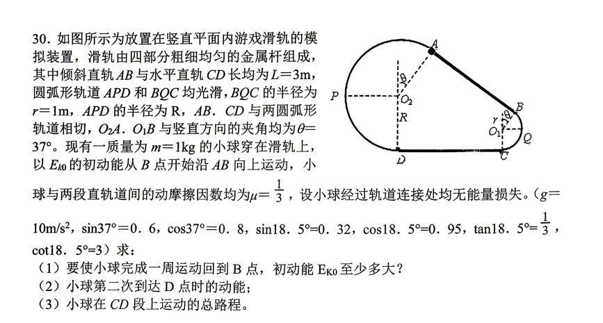

已知：\(L=3\,\text{m}\)，\(r=1\,\text{m}\)，\(m=1\,\text{kg}\)，\(\mu=\dfrac{1}{3}\)，\(\theta=37^\circ\)，\(g=10\,\text{m/s}^2\)；两段圆弧光滑，直轨有摩擦，连接处无能量损失。求：
- 要使小球完成一周运动回到 \(B\) 点，初动能 \(E_{k0}\) 至少多大；
- 小球第二次到达 \(D\) 点时的动能；
- 小球在 \(CD\) 段上运动的总路程。
左侧是原题完整图文。后面三段一次只解决一问：先找第一周的能量门槛，再追踪“第二次到 D”的真实路线，最后只数 CD 上的路程。可用上方按钮直接切换任意一段。
第一问：完成一周，\(E_{k0}\) 至少多大？
式中带虚线框的物理量可点按（或按 Enter / Space），在图上查看对应的位置、长度或路程。
第二问：第二次到达 D 时的动能
式中带虚线框的物理量可点按（或按 Enter / Space），在图上查看对应的位置、长度或路程。
第三问：CD 段上的总路程
式中带虚线框的物理量可点按（或按 Enter / Space），在图上查看对应的位置、长度或路程。